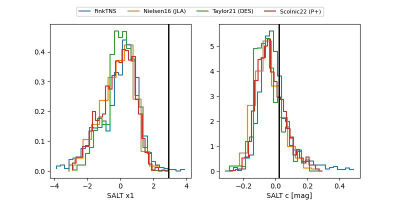

FINK: ZTF25abrwoab
Lasair: ZTF25abrwoab
ALeRCE: ZTF25abrwoab
ZTF25abrwoab (ztf,fink)
equatorial (ra, dec) = (18.7912,+19.17519)
galactic (l, b) = (130.6450,-43.34093)

last ztfr=20.35
2 ztfr detections